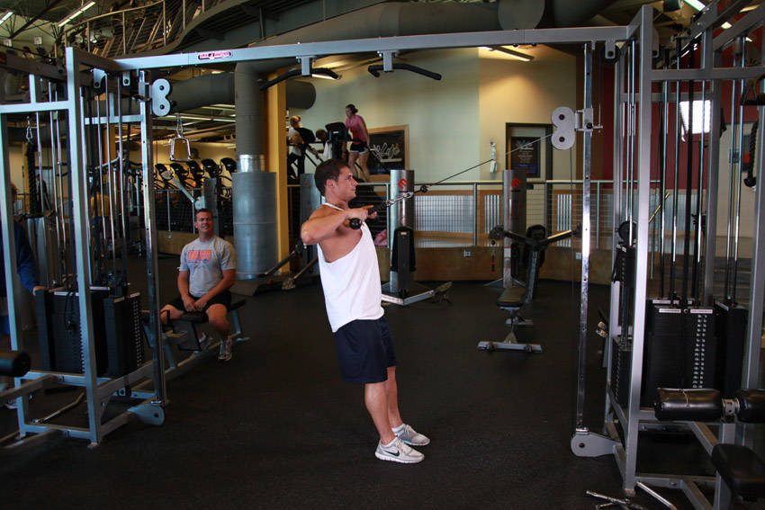

- Sit in the same position on a low pulley row station as you would if you were doing seated cable rows for the back.
- Attach a rope to the pulley and grasp it with an overhand grip. Your arms should be extended and parallel to the floor with the elbows flared out.
- Keep your lower back upright and slide your hips back so that your knees are slightly bent. This will be your starting position.
- Pull the cable attachment towards your upper chest, just below the neck, as you keep your elbows up and out to the sides. Continue this motion as you exhale until the elbows travel slightly behind the back. Tip: Keep your upper arms horizontal, perpendicular to the torso and parallel to the floor throughout the motion.
- Go back to the initial position where the arms are extended and the shoulders are stretched forward. Inhale as you perform this portion of the movement.
- Repeat for the recommended amount of repetitions.
This exercise appears in Programmd training programs. Take the quiz to find one for your gym.
Find your program